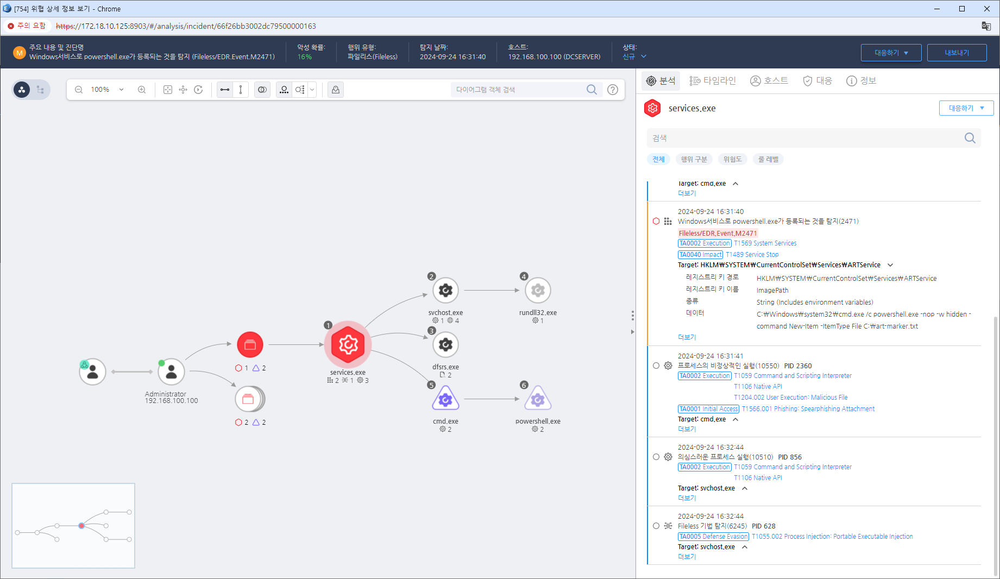

MITRE ATT&CK 액션을 기준으로 대응 방안을 작성
파워쉘을 통한 서비스 등록

서비스 권한 관리 (M1049 - Restrict Application Execution)
서비스 구성 모니터링 (M1033 - Process Monitoring)
서비스 관리 및 제한 (M1047 - System Logging & Monitoring)
서비스 변경 및 구성에 대한 무결성 검증 (M1055 - Secure Data Transmission)
보안 패치 및 업데이트 (M1047 - System Logging & Monitoring)
서비스 계정 관리 (M1053 - Secure Network Communications)
Action 실행시 함꼐 영향을 받는 다른 Techniqes
| ATT&CK |
|---|
| T1569.002 |
| D3FEND |
|---|
| D3-ISL Execution Isolation |
| D3-ISL Kernel-based Process Isolation |
| D3-ISL Application-based Process Isolation |
| D3-ELM System Daemon Monitoring |
| D3-FIM File Integrity Monitoring |
| D3-FIM Service Binary Verification |
| D3-ISL Executable Allowlisting |
| D3-ISL Executable Denylisting |